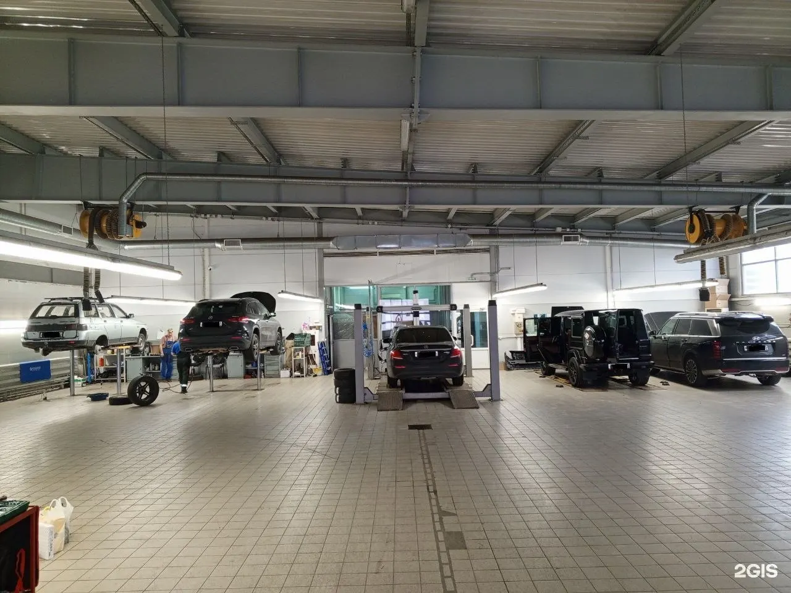
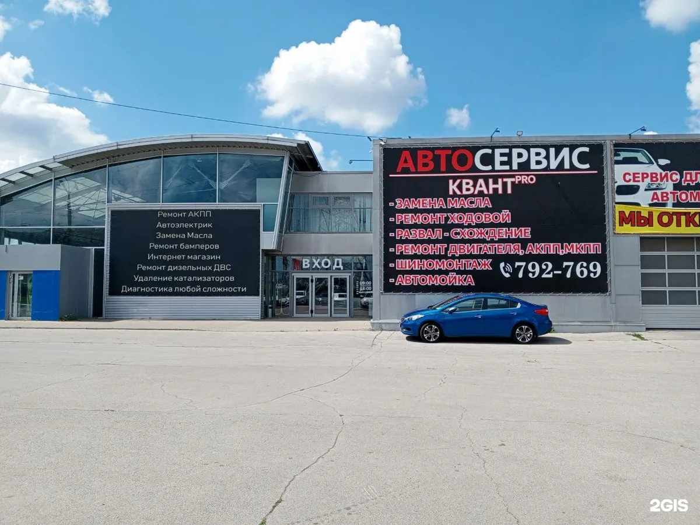
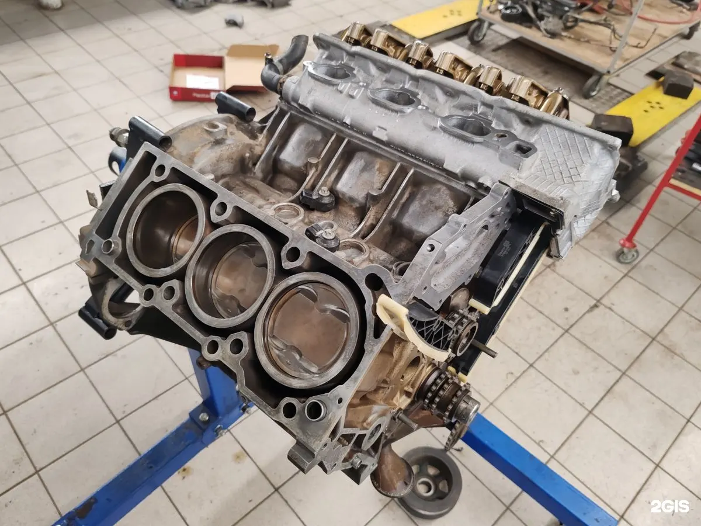
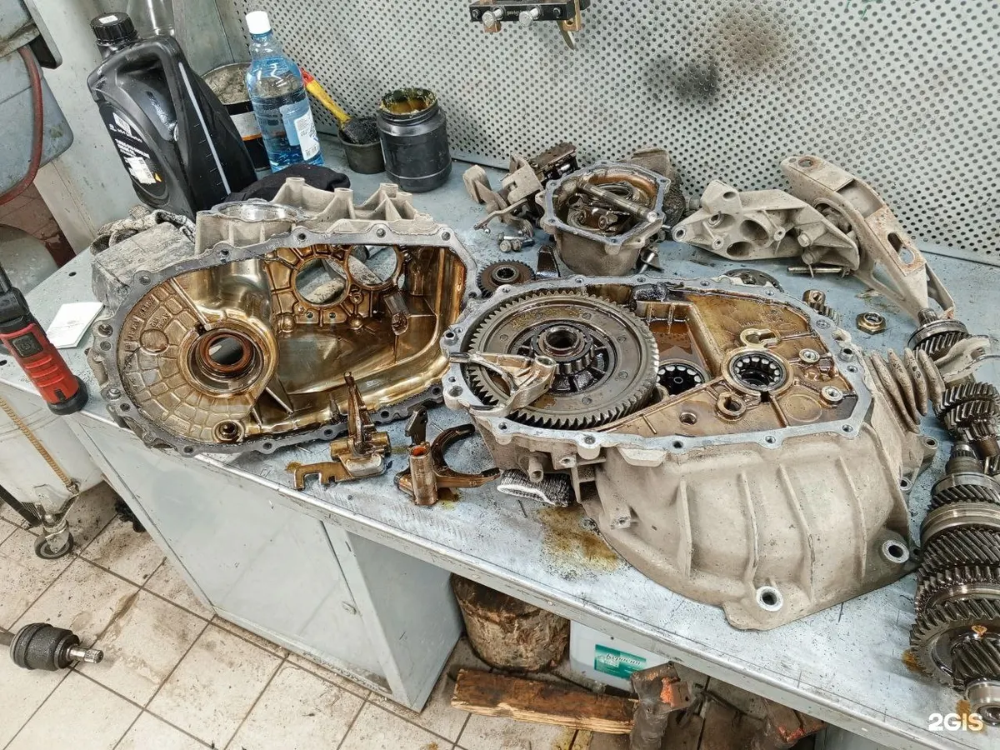

Автосервис на Южном шоссе
Автосервис в Тольятти: ремонт двигателей, коробок и ходовой
Расточка, гильзовка и шлифовка в своём цехе, АКПП и МКПП, развал-схождение, шиномонтаж. Как проехать и во сколько подъехать – подскажем заранее.

- 4,7 в 2ГИС по 20 оценкам
- Пн–пт 09:00–18:00
- Зал ожидания для клиентов
Что ремонтируем
Цену под вашу марку и год назовём после диагностики или в сообщении.
Двигатель
- Ремонт бензиновых двигателейуточнить
- Ремонт дизельных двигателейуточнить
- Расточка и гильзовка блокауточнить
- Шлифовка коленвалауточнить
- Опрессовкауточнить
Коробка, ходовая и остальное
- Ремонт АКПП и МКППуточнить
- Ремонт ходовойуточнить
- Развал-схождениеуточнить
- Замена колодок и маслауточнить
- Шиномонтаж и сварочные работыуточнить
Как проходит ремонт
- 01
Напишите в Telegram
Марка, год и что беспокоит.
- 02
Подскажем дорогу и время
Южное шоссе, 14 ст1, 1 этаж – объясним, как подъехать.
- 03
Диагностика и план ремонта
Покажем, что сломано, и расскажем про этапы работы.
- 04
Подберём и закажем запчасти
Если своих нет – поможем с выбором.



За что нас хвалят в отзывах
Объясняем каждый этап
«Рассказали про все этапы ремонта» – Александр Сафронов.
Помогаем с запчастями
«Запчасти тоже помогли подобрать и заказали» – Алексей Максимов.
Быстро находим причину
«Быстро диагностировали проблему» – Вера К.
Удобно ждать
«Очень комфортный зал ожидания» – Алексей Максимов.
Отзывы из 2ГИС
«Очень довольна работой специалистов в Квант! Быстро диагностировали проблему, все подробно объяснили и качественно произвели ремонт. А самое приятное - стоимость оказалась ниже, чем в других сервисах, в которые я ранее обращалась!»
Вера К. · 23 апреля 2026
«Хочу выразить огромную благодарность автосервису "Квант про" за ремонт двигателя на Лада Ларгус. С самого первого общения грамотно все объяснили и рассказали про все этапы ремонта, сделали все быстро и дешевле чем я планировал.»
Александр Сафронов · 19 мая 2025
«Загонял в данный сервис свой автомобиль с течью антифриза, все сделали на отлично. Запчасти тоже помогли подобрать и заказали. Очень комфортный зал ожидания»
Алексей Максимов · 20 мая 2026
Отзывы с карточки в 2ГИС, без правок.
Контакты
- Адрес
- Южное шоссе, 14 ст1, 1 этаж, Тольятти
- Часы
- Пн–пт 09:00–18:00, сб–вс выходной
- Телефон
- +7 (8482) 79-27-69